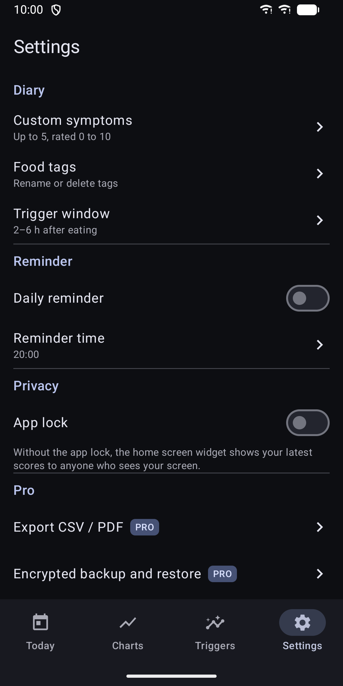

Numeric IBS: diario de SII
Puntúa síntomas del SII de 0 a 10 y registra deposiciones y comidas.



Acerca de la app
Numeric IBS Symptom Scorer es un diario privado para personas con síndrome del intestino irritable (SII), o sospecha de tenerlo, que quieren seguir sus síntomas con números claros, para sí mismas o para su médico. Números exactos, sin deslizadores Puntúa dolor abdominal, hinchazón, gases, retortijones y náuseas de 0 a 10 tocando un número o escribiéndolo. Añade hasta cinco síntomas propios. Registra tantas entradas al día como quieras, cada una con una nota opcional. Si no has notado un síntoma, déjalo sin puntuar. Un registro de deposiciones de verdad Anota cada deposición con el tipo de heces de Bristol (iconos dibujados y texto), la urgencia de 0 a 10, si la evacuación fue completa o incompleta, un aviso opcional de sangre o moco y una nota. Registro de comidas con etiquetas Apunta lo que has comido y añade tus propias etiquetas reutilizables, como lácteos, cebolla o café. Vista del día y gráficos Consulta todo el día en orden cronológico y edita o borra cualquier entrada. Los gráficos muestran la media y el máximo diarios de cada síntoma, las deposiciones por día y la distribución de tipos de Bristol en 7, 30 o 90 días o en todo el historial, sin límite. Cada gráfico incluye además un resumen escrito. Widget y recordatorio El widget de la pantalla de inicio muestra las últimas puntuaciones del día y el número de deposiciones, con botones para añadir entradas rápidamente. Un recordatorio diario opcional te ayuda a mantener el hábito. Privacidad desde el diseño Sin cuenta, sin nube, sin anuncios y sin analíticas. La app no tiene permiso de acceso a internet. Tu diario se guarda en una base de datos cifrada en tu teléfono. Un bloqueo opcional usa tu huella, tu cara, el bloqueo de pantalla o un PIN propio de la app, y mientras está activo, las capturas de pantalla de la app están bloqueadas. Pro, con un único pago • Informe de desencadenantes: tu puntuación media unas horas después de cada etiqueta de comida, comparada con tu nivel habitual, con el número de comidas en que se basa. • Exporta un informe en PDF para tu médico o archivos CSV de cualquier periodo. • Copia de seguridad cifrada y protegida con contraseña, y su restauración, guardada donde tú elijas. El registro, los gráficos, el widget, el recordatorio y el bloqueo siguen siendo gratuitos. Tema claro y oscuro, diseño para móvil y tableta, y compatibilidad total con lectores de pantalla. Por ahora la app solo está disponible en inglés. Esta app no es consejo médico ni diagnostica nada. Las relaciones con alimentos que muestra son solo posibles relaciones. Habla con tu médico sobre tus síntomas.